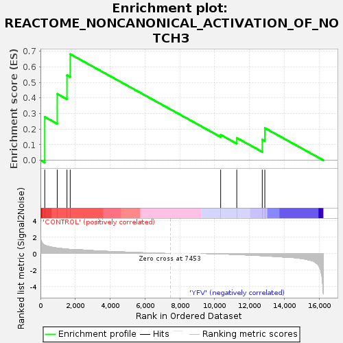
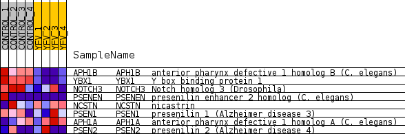
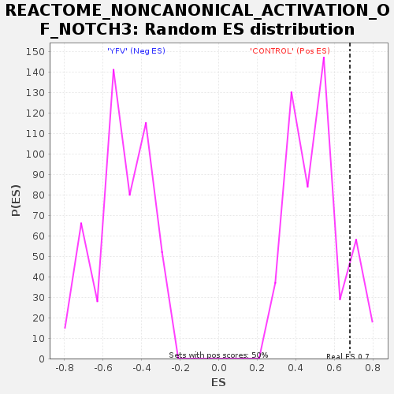

| Dataset | MATRIZ_GSE99081_collapsed_to_symbols.gsea_CLASE_99081.cls#CONTROL_versus_YFV |
| Phenotype | gsea_CLASE_99081.cls#CONTROL_versus_YFV |
| Upregulated in class | CONTROL |
| GeneSet | REACTOME_NONCANONICAL_ACTIVATION_OF_NOTCH3 |
| Enrichment Score (ES) | 0.6815281 |
| Normalized Enrichment Score (NES) | 1.346867 |
| Nominal p-value | 0.099403575 |
| FDR q-value | 1.0 |
| FWER p-Value | 1.0 |

| SYMBOL | TITLE | RANK IN GENE LIST | RANK METRIC SCORE | RUNNING ES | CORE ENRICHMENT | |
|---|---|---|---|---|---|---|
| 1 | APH1B | anterior pharynx defective 1 homolog B (C. elegans) | 246 | 0.999 | 0.2781 | Yes |
| 2 | YBX1 | Y box binding protein 1 | 963 | 0.655 | 0.4263 | Yes |
| 3 | NOTCH3 | Notch homolog 3 (Drosophila) | 1522 | 0.526 | 0.5461 | Yes |
| 4 | PSENEN | presenilin enhancer 2 homolog (C. elegans) | 1707 | 0.500 | 0.6815 | Yes |
| 5 | NCSTN | nicastrin | 10343 | -0.047 | 0.1635 | No |
| 6 | PSEN1 | presenilin 1 (Alzheimer disease 3) | 11269 | -0.127 | 0.1437 | No |
| 7 | APH1A | anterior pharynx defective 1 homolog A (C. elegans) | 12732 | -0.269 | 0.1324 | No |
| 8 | PSEN2 | presenilin 2 (Alzheimer disease 4) | 12879 | -0.285 | 0.2070 | No |

